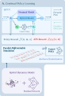
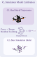

Reconstructed asymmetric layout with an absolute-canvas positioning
system. Hover any module to spotlight it; click to pin the detail panel.
Tweak every module's left / top / width / height from the
single :root control panel at the top of the CSS.


Real-world Anchored Short-horizon Backpropagation Through Time
(RASH-BPTT). The control policy \(\pi_\phi\) is an MLP
(2×256 hidden units) producing a 4-D CTBR command
\(\mathbf{u}_k=[c,\bm{\omega}_{\mathrm{cmd}}^\top]^\top\). We unroll the
learned hybrid dynamics for \(H\) steps and differentiate through the
entire trajectory via JAX autodiff + JIT + vmap.
Tightly coupled with Module E: \(\phi\) and \(\alpha\) are updated jointly each cycle.
The quadrotor executes the current policy \(\pi_\phi\) on physical hardware, streaming state-action transitions \((\mathbf{x}_k,\mathbf{u}_k,\mathbf{x}_{k+1})\) into a sliding-window replay buffer \(\mathcal{B}\) for downstream calibration.
Includes a short history \(\mathbf{h}_k\) of past actions for control smoothness.
A neural residual augments nominal rigid-body dynamics to close the reality gap (unmodeled aerodynamics, motor delays, payload). Trained online by minimizing one-step prediction error through a differentiable RK4 integrator on \(SO(3)\).
\(\mathcal{D}\) combines Euclidean translation error and the geodesic \(\|\mathrm{Log}(\hat{\mathbf{R}}^\top\mathbf{R})^\vee\|_2^2\) on \(SO(3)\).
Instead of random simulator resets, every short-horizon rollout starts from the instantaneous physical state estimate. This anchors policy gradients in reality and avoids the model exploitation failure mode of long-horizon BPTT.
Compounding prediction errors of the learned residual grow with horizon length. A short \(H\) keeps the gradient \(\nabla_\phi\mathcal{J}\) faithful to the current dynamic regime, so no rollout drifts far from a state the model has actually seen.
ATS optimises the time-scale \(\alpha\) by counterfactual reasoning anchored at the actual real-world rollout \(\{(\bar{\mathbf{x}}_k,\bar{\mathbf{u}}_k)\}\). The differentiable hybrid model serves as a proxy to construct a counterfactual state sequence \(\hat{\mathbf{x}}_k(\alpha)\) (what the trajectory would have been at a different time-scale), and gradients flow through this proxy with no physical perturbation. The result is temporal elasticity: ATS compresses time (smaller \(\alpha\)) when tracking is precise, and relaxes it when disturbances or model mismatch grow.
\(\Psi(z)=\tfrac{1}{\kappa}\ln(1+e^{\kappa z})\) is a Softplus barrier; \(\mathcal{E}_k\) is the tracking error of the counter- factual rollout \(\hat{\mathbf{x}}_k(\alpha)\).
\(\nabla_\alpha\mathcal{J}_{\text{ATS}}\) is propagated along the real rollout via a one-step linearisation of the hybrid model. The state sensitivity \(\mathbf{S}_k \triangleq \mathrm{d}\hat{\mathbf{x}}_k/\mathrm{d}\alpha\), with \(\mathbf{S}_0 = \mathbf{0}\), evolves recursively:
with the Jacobians frozen at the measured real-world rollout \((\bar{\mathbf{x}}_k,\bar{\mathbf{u}}_k)\):
The action sensitivity is obtained by differentiating the policy through its observation \(\mathbf{o}_k(\hat{\mathbf{x}}_k, \mathbf{x}_{\mathrm{ref},k}(\alpha))\):
Chaining \(\mathbf{S}_k\) into the per-step error gradient \(\partial \mathcal{E}_k/\partial \hat{\mathbf{x}}_k\) closes the loop: \(\alpha\) is then updated by a single projected gradient step using the analytical \(\nabla_\alpha\mathcal{J}_{\text{ATS}}\), with no finite-difference probing of the physical system.
The five modules form a continuous closed-loop cycle bridging the physical robot and the differentiable simulator. Each pass refines both the dynamics model \(\theta\) and the policy \(\phi\), while ATS retunes the time-scale \(\alpha\).
Base policy evolves from 1.9 m/s to 7.3 m/s peak speed within roughly 100 s of physical flight. No offline system ID, no conservative safety margins.